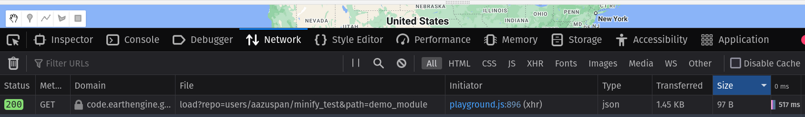

Should You Minify Your Earth Engine Modules?
In this post, we’ll go into the weeds on the Earth Engine module importing system to answer the question, does minifying our source code speed up imports?
Quick answer?
What is Minifying?
In web development, source code files are usually minified before they’re distributed, removing comments and extra whitespace in order to compress file sizes and speed up page loading. Your browser doesn’t care how nicely formatted and human-readable your code is, so why waste the time and energy to download characters that won’t affect execution?

Whenever you use require to import a module in the Earth Engine code editor, the content of that module has to be downloaded and parsed before it can be run, including all of the whitespace and comments that the end user will never see. That begs the question: should Earth Engine modules be minified? To answer that question, I measured import speeds for a normal and a minified module and compared the results.
Setting up the Test
The Minifier
There are tons of tools available for minifying JavaScript, including command-line interfaces, Python packages, and Node modules. For simplicity, I used the DigitalOcean minify tool that lets you minify code in the browser. If you wanted to practically minify your modules, you’d probably want a tool you could automate, but this will do just fine for our experiment.
The Module
The more comments and whitespace source code contains, the more the minifier can remove and the greater the compression effect will be. In order to give minification the best possible chance, I chose to test minification on msslib, an awesome module for working with early Landsat data written by @jstnbraaten. The module is 1,027 lines long and exports 13 functions and 6 values, so it’s reasonably complex. Most importantly, it’s very well documented, with long, descriptive docstrings and examples throughout, making it an ideal candidate for minifying.
I copied the msslib.js source code (all public Earth Engine source code can be found here) and saved an original and minified version of the module into a new repository for convenience. Now, I just needed to see how long it takes to import each version of the module.
How do Imports Work, Anyways?
Before going further, it’s worth a quick diversion into the inner workings of the Earth Engine module system. Quick disclaimer: I don’t work for Google or have access to Earth Engine source code, so this is all gleaned from inspecting frontend code and network traffic.
Say you have a module with the following source code, saved to a repository at users/aazuspan/minify_test:demo_module.
// This is my function!
exports.myFunction = function() {print("This module isn't very useful!")};
Now, you want to import that function into another script using the code below:
var m = require("users/aazuspan/minify_test:demo_module");
When you run the script above, a GET request will be made to download that module. If you watch the network traffic in your browser’s developer tools, you can see the request being made and the response being received (assuming the module is found).

That request took 517 ms to return this JSON response:
"// This is my function!\nexports.myFunction = function() {print(\"This module isn't very useful!\")};"
That JSON gets parsed back into valid JavaScript code, allowing you to call m.myFunction and get the expected print.
In order to compare import speed between the original and minified msslib, I just had to know how long those GET requests took for the original and minified modules. I copied the request headers made by the browser into a Python script so that I could easily make 100 repeated requests to each module, recording the time each request took.
Results
File Size
Minifying msslib.js led to an impressive 76% reduction in file size. This is probably on the high end of what is possible due to the generous comments and whitespace that could be removed from the module during minification, so let’s call it a best-case-scenario for minifying.

Download Speed
Averaged over 100 runs, the original uncompressed msslib module took 718 milliseconds to request and download. Okay, that’s not that much. You’re not going to go make a sandwich while you wait three quarters of a second for the import to finish. But if reducing our file size by 76% reduces our download time proportionally to only 178 milliseconds, that would be a noticeable improvement. So, does it?
On average, the lightweight, minified msslib module takes 686 milliseconds to request and download, a decrease in request time of about… 4%.
What Happened?
Why didn’t request times decrease by 76% alongside our file size? Well, of that total request time, only about 5% is spent actually downloading the minified code. The rest is spent waiting for the Earth Engine to process and serve the module. Minifying did consistently decrease download times by a factor of almost 10, but with server time practically unaffected (and occasionally increased) by minifying, it failed to make a meaningful dent in the total request time.
So, is it worth minifying your modules to speed up imports? If you have a large enough module or a slow enough connection that downloading becomes a substantial portion of the total request time, then you might see a practical improvement from minifying. But is it worth the hassle for the average module, and will it be noticeable to the average user? Almost certainly not.
TLDR
- Minifying shrinks JavaScript source code without affecting how it runs
- Importing Earth Engine modules downloads the source code, which takes time
- Minifying an example module decreased its file size by 76% but only sped up imports by 4%
- Most of the time spent on importing is waiting for a response from the server, not downloading code, so file size isn’t the bottleneck.